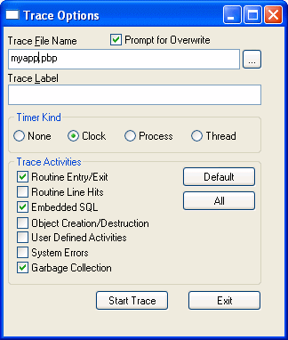

There are three ways to collect trace information. You can use:
Use the Profiling tab if you want to trace an entire application run in the development environment. For more information, see "Tracing an entire application in PowerBuilder".
Use a window or trace objects and functions if you want to create a trace file for selected parts of the application or the entire application, either in the development environment or when running an executable file. See "Using a window" and "Collecting trace information using PowerScript functions".
 Collection time The timer values in the trace file exclude the time taken
to collect the trace data. Because an application can be idle (while
displaying a MessageBox, for example), percentage metrics are most
meaningful when you control tracing programmatically, which can
help minimize idle time. Percentages are less meaningful when you
create a trace file for a complete application.
Collection time The timer values in the trace file exclude the time taken
to collect the trace data. Because an application can be idle (while
displaying a MessageBox, for example), percentage metrics are most
meaningful when you control tracing programmatically, which can
help minimize idle time. Percentages are less meaningful when you
create a trace file for a complete application.
Whichever method you use, you can specify:
The default name of the trace file is the name of the application with the extension PBP. The trace file is saved in the directory where the PBL or executable file resides and overwrites any existing file of the same name. If you run several different tests on the same application, you should change the trace file name for each test.
You can also associate a label with the trace data. If you are tracing several different parts of an application in a single test run, you can associate a different label with the trace data (the trace block) for each part of the application.
There are three kinds of timer: clock, process, and thread. If your analysis does not require timing information, you can omit timing information from the trace file to improve performance.
If you do not specify a timer kind, the time at which each activity begins and ends is recorded using the clock timer, which measures an absolute time with reference to an external activity, such as the machine's start-up time. The clock timer measures time in microseconds. Depending on the speed of your machine's central processing unit, the clock timer can offer a resolution of less than one microsecond. A timer's resolution is the smallest unit of time the timer can measure.
You can also use process or thread timers, which measure time in microseconds with reference to when the process or thread being executed started. You should always use the thread timer for distributed applications. Both process and thread timers exclude the time taken by any other running processes or threads so that they give you a more accurate measurement of how long the process or thread is taking to execute, but both have a lower resolution than the clock timer.
You can choose to record in the trace file the time at which any of the following activities occurs. If you are using the System Options dialog box or a window, you select the check boxes for the activities you want. If you are using PowerScript functions to collect trace information, you use the TraceActivity enumerated type to identify the activity.
When you begin and end tracing, an activity of type ActBegin! is automatically recorded in the trace file. User-defined activities, which you use to log informational messages to the trace file, are the only trace activities enabled by default.
Use the Profiling tab on the System Options dialog box if you want to collect trace data for an entire application run in the PowerBuilder development environment.
 To trace an entire application in PowerBuilder:
To trace an entire application in PowerBuilder:
Select Tools>System Options from the PowerBar and select the Profiling tab.
Specify a name for the trace file, select the trace options you want, and click OK.
When you run the application, the activities you selected are logged in the trace file.
You can create a window that is similar to the Profiling tab on the System Options dialog box and add it to any application that is under development, so that you can start and stop tracing when testing specific actions.
The w_start_trace window is available in the PowerBuilder Profiler sample in the General section of the PowerBuilder Samples and Utilities page . This sample also shows the code used to create the profiling tools described in "Analyzing trace information using profiling tools".
The w_start_trace window lets you specify a trace file name, label, and timer kind, as well as which activities you want to trace:

The following instance variables are defined for the window:
TimerKind itk_kind
string is_title = 'Trace Options '
string is_starttext
The open event for the window sets some defaults:
application lapp_current
lapp_current = getapplication()
itk_kind = Clock!
is_starttext = cb_startstop.text
sle_filename.text = classname(lapp_current)+'.pbp'
The following code shows the script for the Clicked event of the Start Trace button. The text for the button is set to Start Trace in the painter. When the user clicks Start Trace, the button label changes to Stop Trace. The Clicked event script checks the text on the button before either starting or stopping tracing. This script uses the functions described in "Collecting trace information using PowerScript functions":
// instance variables:
// errorreturn le_errorreturn
integer li_key
// Check that the button label is Start Trace
// and a trace file name has been entered
if this.text = is_starttext then
if len(trim(sle_filename.text)) = 0 then
messagebox(parent.title, &
'Trace file name is required',information!)
sle_filename.setfocus()
return
end if
// If Prompt for overwrite is checked and the
// file exists, pop up a response window
if cbx_prompt.checked and &
fileexists(sle_filename.text) then
li_key = messagebox(parent.title, &
'OK to overwrite '+sle_filename.text, &
question!,okcancel!,1)
if li_key = 2 then return
end if
// Open the trace file
TraceOpen( sle_filename.text, itk_kind )
// Enable tracing for checked activities
// For each activity, check for errors and close
// the trace file if an error occurs
if cbx_embeddedsql.checked then
le_errorreturn = TraceEnableActivity( ActESql! )
if le_errorreturn <> Success! then
of_errmsg(le_errorreturn, &
'TraceEnableActivity( ActESql! )')
le_errorreturn = Traceclose()
if le_errorreturn <> Success! then
of_errmsg(le_errorreturn,'TraceClose')
end if
return
end if
end if
if cbx_routineentry.checked then
le_errorreturn =TraceEnableActivity(ActRoutine!)
if le_errorreturn <> Success! then
of_errmsg(le_errorreturn, &
'TraceEnableActivity( ActRoutine! )')
Traceclose()
if le_errorreturn <> Success! then
of_errmsg(le_errorreturn,'TraceClose')
end if
return
end if
end if
if cbx_userdefined.checked then
le_errorreturn = TraceEnableActivity( ActUser! )
if le_errorreturn <> Success! then
of_errmsg(le_errorreturn, &
'TraceEnableActivity( ActUser! )')
Traceclose()
if le_errorreturn <> Success! then
of_errmsg(le_errorreturn,'TraceClose')
end if
return
end if
end if
if cbx_systemerrors.checked then
le_errorreturn = TraceEnableActivity(ActError! )
if le_errorreturn <> Success! then
of_errmsg(le_errorreturn, &
'TraceEnableActivity( ActError! )')
Traceclose()
if le_errorreturn <> Success! then
of_errmsg(le_errorreturn,'TraceClose')
end if
return
end if
end if
if cbx_routineline.checked then
le_errorreturn = TraceEnableActivity( ActLine! )
if le_errorreturn <> Success! then
of_errmsg(le_errorreturn, &
' TraceEnableActivity( ActLine! )')
Traceclose()
if le_errorreturn <> Success! then
of_errmsg(le_errorreturn,'TraceClose')
end if
return
end if
end if
if cbx_objectcreate.checked then
le_errorreturn = &
TraceEnableActivity( ActObjectCreate! )
if le_errorreturn <> Success! then
of_errmsg(le_errorreturn, &
'TraceEnableActivity( ActObject! )')
Traceclose()
if le_errorreturn <> Success! then
of_errmsg(le_errorreturn,'TraceClose')
end if
return
end if
le_errorreturn = &
TraceEnableActivity( ActObjectDestroy! )
if le_errorreturn <> Success! then
of_errmsg(le_errorreturn, &
'TraceEnableActivity(ActObjectDestroy!)')
Traceclose()
if le_errorreturn <> Success! then
of_errmsg(le_errorreturn,'TraceClose')
end if
return
end if
end if
if cbx_garbagecoll.checked then
le_errorreturn = &
TraceEnableActivity( ActGarbageCollect! )
if le_errorreturn <> Success! then
of_errmsg(le_errorreturn, &
'TraceEnableActivity(ActGarbageCollect! )')
Traceclose()
if le_errorreturn <> Success! then
of_errmsg(le_errorreturn,'TraceClose')
end if
return
end if
end if
// Start tracing
le_errorreturn =TraceBegin( sle_tracelabel.text )
if le_errorreturn <> Success! then
of_errmsg(le_errorreturn,'TraceBegin')
return
end if
// Change the title of the window and the
// text of the Start Trace button
parent.title = is_title + '(Tracing)'
this.text = 'Stop &Tracing'
// If the button label is Stop Trace, stop tracing
// and close the trace file
else
le_errorreturn =TraceEnd()
if le_errorreturn <> Success! then
of_errmsg(le_errorreturn,'TraceEnd')
return
end if
le_errorreturn =TraceClose()
if le_errorreturn <> Success! then
of_errmsg(le_errorreturn,'TraceClose')
end if
this.text = is_starttext
parent.title = is_title
end if
The window uses two functions to handle error messages. The of_errmsg function displays a message box:
// of_errmsg
Messagebox( this.title,'Error executing '+ as_msg + &
'. Error code : '+ of_converterror(ae_error) )
The of_converterror function converts the ErrorReturn parameter to a string:
// of_converterror: convert enumerated type
// ErrorReturn parameter to text.
String ls_result
choose case a_error
Case Success!
ls_result = "Success!"
Case FileCloseError!
ls_result = "FileCloseError!"
Case FileOpenError!
ls_result = "FileOpenError!"
Case FileReadError!
ls_result = "FileReadError!"
Case FileWriteError!
ls_result = "FileWriteError!"
Case FileNotOpenError!
ls_result = "FileNotOpenError!"
Case FileAlreadyOpenError!
ls_result = "FileAlreadyOpenError!"
Case FileInvalidFormatError!
ls_result = "FileInvalidFormatError!"
Case FileNotSetError!
ls_result = "FileNotSetError!"
Case EventNotExistError!
ls_result = "EventNotExistError!"
Case EventWrongPrototypeError!
ls_result = "EventWrongPrototypeError!"
Case ModelNotExistsError!
ls_result = "ModelNotExistsError!"
Case ModelExistsError!
ls_result = "ModelExistsError!"
Case TraceStartedError!
ls_result = "TraceStartedError!"
Case TraceNotStartedError!
ls_result = "TraceNotStartedError!"
Case TraceNoMoreNodes!
ls_result = "TraceNoMoreNodes!"
Case TraceGeneralError!
ls_result = "TraceGeneralError!"
Case FeatureNotSupportedError!
ls_result = "FeatureNotSupportedError!"
Case else
ls_result = "Unknown Error Code"
end choose
return ls_result
You use the PowerScript system functions listed in Table 33-2 to collect information in a trace file. Each of these functions returns a value of type ErrorReturn, an enumerated datatype.
In general, you call the functions in the order shown in the table. That is, you must call TraceOpen before you call any other trace functions. You call TraceClose when you have finished tracing.
TraceEnableActivity and TraceDisableActivity can be called only when a trace file is open but tracing has not begun or has stopped—that is, before you call TraceBegin or after you call TraceEnd.
TraceUser and TraceError can be called only when the trace file is open and tracing is active—that is, after you call TraceBegin and before you call TraceEnd.
You can use TraceUser to record specific events in the trace file, such as the beginning and end of a body of code. You can also record the execution of a statement you never expected to reach, such as the DEFAULT statement in a CHOOSE CASE block. TraceError works just like TraceUser, but you can use it to signal more severe problems.
Both TraceUser and TraceError take a number and text string as arguments. You can use a simple text string that states what activity occurred, or you can build a string that provides more diagnostic information by including some context, such as the current values of variables. Run the application with only ActUser! or ActError! tracing turned on and then use the Profiling Trace View to pinpoint problems quickly.
In this example, the user selects a timer kind from a drop-down list and enters a name for the trace file in a single-line edit box. Typically you would use the ErrorReturn return value from every trace call to return an error message if the call fails. For brevity, the example shows this only for the TraceOpen call.
Several trace activities are disabled for a second trace block. The activities that are not specifically disabled remain enabled until TraceClose is called.
ErrorReturn le_err
integer li_key
TimerKind ltk_kind
CHOOSE CASE ddlb_timerkind.Text
CASE "None"
ltk_kind = TimerNone!
CASE "Clock"
ltk_kind = Clock!
CASE "Process"
ltk_kind = Process!
CASE "Thread"
ltk_kind = Thread!
END CHOOSE
// Open the trace file and return an error message
// if the open fails
le_err = TraceOpen( sle_fileName.Text, ltk_kind )
IF le_err <> Success! THEN &
of_errmsg(le_err, 'TraceOpen failed')
RETURN
END IF
// Enable trace activities. Enabling ActLine!
// enables ActRoutine! implicitly
TraceEnableActivity(ActESQL!)
TraceEnableActivity(ActUser!)
TraceEnableActivity(ActError!)
TraceEnableActivity(ActLine!)
TraceEnableActivity(ActObjectCreate!)
TraceEnableActivity(ActObjectDestroy!)
TraceEnableActivity(ActGarbageCollect!)
TraceBegin("Trace_block_1")
// first block of code to be traced
// this block has the label Trace_block_1
...
TraceEnd()
// disable trace activities not needed for
// second block
TraceDisableActivity(ActLine! )
TraceDisableActivity(ActObjectCreate!)
TraceDisableActivity(ActObjectDestroy!)
TraceDisableActivity(ActGarbageCollect!)
TraceBegin("Trace_block_2")
// second block of code to be traced
...
TraceEnd()
TraceClose()